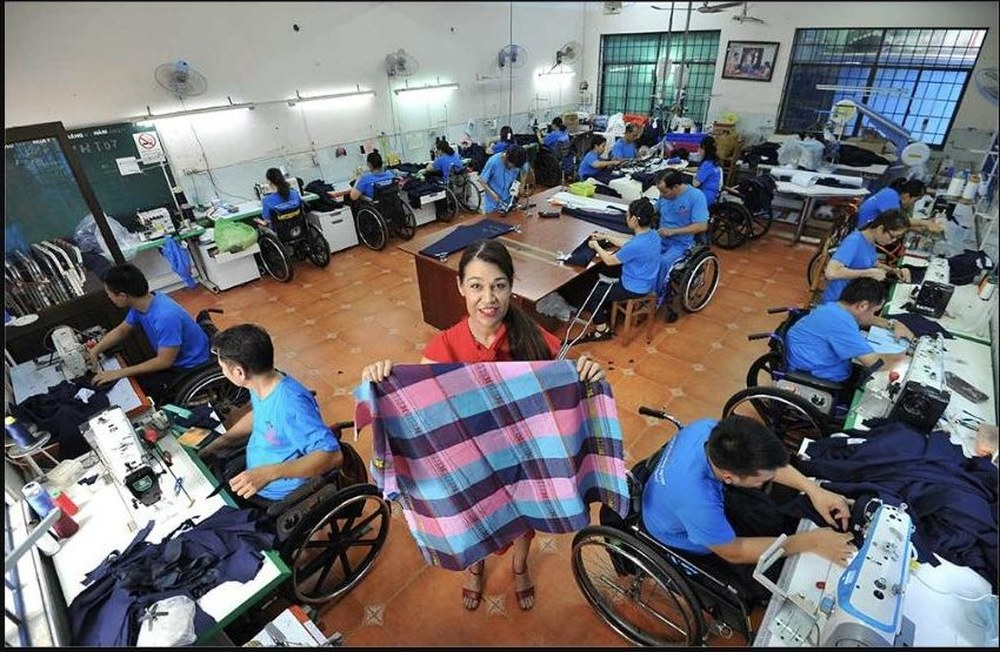

Maison Chance
ก่อตั้งขึ้นในปี 1993 Maison Chance มอบบ้าน การดูแลทางการแพทย์ การศึกษา และวิชาชีพให้แก่เด็กกำพร้า เด็กเร่ร่อน และผู้พิการในนครโฮจิมินห์ — พร้อมทั้งครอบครัวที่แท้จริงให้พวกเขาได้เป็นส่วนหนึ่ง

การพบกันโดยบังเอิญที่เติบโตเป็นครอบครัวหลายร้อยคน
เรื่องราวของ Maison Chance ย้อนกลับไปในปี 1993 เมื่อจิตรกรสาวชาวสวิสชื่อ Aline Rebeaud ไปเยี่ยมโรงพยาบาลจิตเวชแห่งหนึ่งทางตอนใต้ของเวียดนามโดยบังเอิญ และพบเด็กชายคนหนึ่งถูกล่ามโซ่อยู่ตามลำพังในมุมห้อง อาการป่วยหนัก เธอพาเขาไปโรงพยาบาลและดูแลเขาอย่างใกล้ชิดทั้งวันทั้งคืนนานสามเดือน — และนับแต่นั้นก็ไม่เคยจากเวียดนามไปอีกเลย ครอบครัวในท้องถิ่นเริ่มเรียกเธอว่า "Tim" ซึ่งแปลว่า "หัวใจ" และบ้านหลังเล็ก ๆ ที่เธอเปิดต้อนรับเด็กกำพร้า เด็กเร่ร่อน และผู้พิการ ก็กลายเป็นที่รู้จักในชื่อ Maison Chance หรือ "บ้านแห่งโอกาส"
สิ่งที่ทำให้ Maison Chance แตกต่างคือผู้ที่มีร่างกายสมบูรณ์และผู้พิการ เด็กและผู้ใหญ่ อาศัยอยู่ร่วมกันเป็นครอบครัวเดียว แทนที่จะแยกเป็นแผนกต่าง ๆ ผู้พิการที่อายุมากกว่าจะคอยให้คำแนะนำแก่เด็ก ๆ ในขณะที่เด็ก ๆ ก็ช่วยงานประจำวัน เช่น เข็นรถเข็น ผ่านมากว่าสามสิบปี ปัจจุบันองค์กรให้การสนับสนุนผู้คนหลายร้อยคนในคราวเดียว ผ่านสี่ศูนย์รอบนครโฮจิมินห์และในจังหวัดเลิมด่ง
สี่บ้าน หนึ่งพันธกิจร่วมกัน
ที่อยู่อาศัยและการดูแล
ศูนย์พักพิงแห่งแรกมอบที่อยู่อาศัย อาหาร และการดูแลทางการแพทย์โดยไม่มีค่าใช้จ่ายแก่เด็กกำพร้าและผู้พิการที่ไม่มีที่ไป
สุขภาพและกายภาพบำบัด
กายภาพบำบัดและการดูแลทางการแพทย์ในสถานที่ช่วยให้ผู้พักอาศัยที่พิการฟื้นฟูความสามารถในการเคลื่อนไหวและความเป็นอิสระ
การฝึกอาชีพ
ศูนย์ Take Wing ฝึกอบรมด้านการตัดเย็บ คอมพิวเตอร์ การออกแบบ และงานไม้ ซึ่งนำไปสู่การจ้างงานที่มีรายได้ในสถานที่โดยตรง
การศึกษา
โรงเรียนประถมศึกษาตามมาตรฐานแห่งชาติที่ Village Chance ออกแบบมาให้เข้าถึงได้ด้วยรถเข็น สอนเด็ก ๆ ร่วมกับเพื่อนวัยเดียวกัน

ผู้พักอาศัยที่ศูนย์ Take Wing ซึ่งเวิร์กช็อปตัดเย็บ คอมพิวเตอร์ และงานฝีมือเปลี่ยนการฝึกอาชีพให้กลายเป็นงานที่มีรายได้
หมู่บ้านและโรงเรียนที่ออกแบบรอบรถเข็น ไม่ใช่รอบอุปสรรค
Village Chance ศูนย์แห่งที่สามที่เปิดขึ้น รวบรวมอพาร์ตเมนต์ที่เข้าถึงได้ โรงเรียนประถมศึกษาตามมาตรฐานแห่งชาติ สถานรับเลี้ยงเด็ก และสระว่ายน้ำบำบัดที่ออกแบบมาเฉพาะสำหรับผู้พักอาศัยที่พิการ ต่างจากที่อยู่อาศัยส่วนใหญ่ในบริเวณใกล้เคียง อาคารทุกหลังที่นี่ถูกออกแบบให้เคลื่อนที่ได้สะดวกแม้ในฝนตกหนัก — รายละเอียดเล็ก ๆ ที่สร้างความแตกต่างอย่างมากต่อความเป็นอิสระในชีวิตประจำวัน
ดูโครงการของเรา
วิดีโอสั้นจาก Maison Chance
วิดีโอโดย Maison Chance (maison-chance.org)
การสนับสนุนของเราที่ Maison Chance
การสนับสนุนของ Entraide Asia ที่ Maison Chance มุ่งเน้นไปที่ความต้องการที่จำเป็นในชีวิตประจำวันของชุมชน ได้แก่ การปรับปรุงสิ่งอำนวยความสะดวกในห้องเรียน การเพิ่มทางลาดและอุปกรณ์สำหรับผู้พักอาศัยที่พิการ และครอบคลุมค่าใช้จ่ายที่หากไม่ได้รับความช่วยเหลือ จะแข่งขันโดยตรงกับความสามารถของแต่ละครอบครัวในการให้บุตรหลานได้เรียนต่อหรือผู้พักอาศัยได้รับการบำบัดต่อเนื่อง
คุณคริสตอฟเดินทางไปเยี่ยม Maison Chance ด้วยตนเอง พบปะเจ้าหน้าที่และผู้พักอาศัยในสถานที่จริง เพื่อดูว่าจุดใดต้องการความช่วยเหลือมากที่สุด แทนที่จะให้ทุนจากระยะไกล